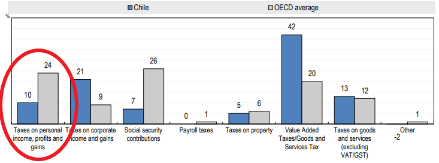
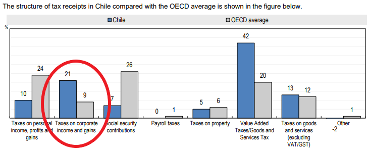

Some differences between Chile and the rest of the OECD
Chile doesn't need to reinvent the wheel
Note: It's a lot more complicated than this. This is a high-level analysis on economic policies.
Chile collects less than half of the OECD average from personal income taxes.
"Relative to the OECD average, the tax structure in Chile is characterised by substantially lower revenues from taxes on personal income."
OECD Revenue Statistics 2019
Personal income tax is a progressive tax,
high salaries pay a bigger %
"The personal income tax is the most progressive tax, although there are significant cross-country variations."
Joumard, Isabelle, Mauro
Pisu and Debbie Bloch (2012), “Tackling
income inequality: The role of taxes and transfers”, OECD Journal:
Economic Studies, published online first.
http://dx.doi.org/10.1787/eco_studies-2012-5k95xd6l65lt
Chile doesn't use personal income tax to reduce inequality

"The Gini index measures the extent to which the distribution of incomes among households deviates from perfect equal
distribution. A value of zero represents perfect equality and a value of 100 extreme inequality. Redistribution is measured by the
difference between the Gini coefficient before personal income taxes and transfers (market incomes) and the Gini coefficient after
taxes and transfers (disposable incomes) in per cent of the Gini coefficient before taxes and transfers."
Causa, O. and M. Hermansen (2017), "Income redistribution through taxes and transfers across OECD countries", OECD Economics Department Working Papers, No. 1453, OECD Publishing, Paris, https://doi.org/10.1787/bc7569c6-en.
El Estado Chileno recauda mas del doble que el promedio OCDE del IVA

Relative to the OECD average, the tax structure in Chile is characterised by substantially higher revenues from value-added taxes (VAT).
OECD Revenue Statistics 2019
El IVA perjudica a los pobres
VATis a regressive tax.This means the lower your salary is, the more % is taken by VAT.
El Estado Chileno recauda mas del doble que el promedio OCDE de utilidades
Como sale en OECD Revenue Statistics 2019, cerca del 42% de lo que recauda el Estado Chileno viene del IVA. En la OECD, el promedio es 20%.
Un impuesto bajo a las utilidades atrae inversion al pais
Relative to the OECD average, the tax structure in Chile is characterised by substantially higher revenues from taxes on corporate income & gains.
OECD Revenue Statistics 2019
El Estado Chileno recauda mas del doble que el promedio OCDE de utilidades
Como sale en OECD Revenue Statistics 2019, cerca del 42% de lo que recauda el Estado Chileno viene del IVA. En la OECD, el promedio es 20%.
Un impuesto bajo a las utilidades atrae inversion al pais
Relative to the OECD average, the tax structure in Chile is characterised by substantially higher revenues from taxes on corporate income & gains.
OECD Revenue Statistics 2019